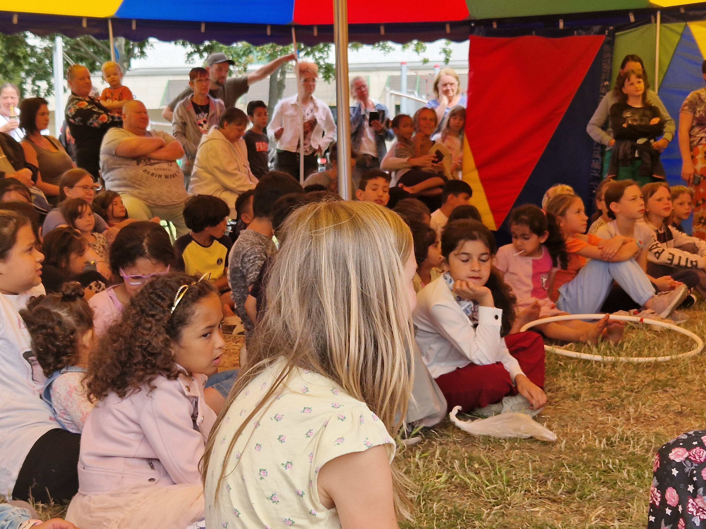

<!DOCTYPE html>
<html lang="en">
  <head>
    <meta charset="utf-8" />
    <meta name="viewport" content="width=device-width, initial-scale=1.0, maximum-scale=1.0, user-scalable=no" />

    <title></title>
    <link rel="stylesheet" href="dist/reveal.css" />
    <link rel="stylesheet" href="dist/theme/white.css" id="theme" />
    <link rel="stylesheet" href="plugin/highlight/zenburn.css" />
	<link rel="stylesheet" href="css/layout.css" />
	<link rel="stylesheet" href="plugin/customcontrols/style.css">


    <script defer src="dist/fontawesome/all.min.js"></script>

	<script type="text/javascript">
		var forgetPop = true;
		function onPopState(event) {
			if(forgetPop){
				forgetPop = false;
			} else {
				parent.postMessage(event.target.location.href, "app://obsidian.md");
			}
        }
		window.onpopstate = onPopState;
		window.onmessage = event => {
			if(event.data == "reload"){
				window.document.location.reload();
			}
			forgetPop = true;
		}

		function fitElements(){
			const itemsToFit = document.getElementsByClassName('fitText');
			for (const item in itemsToFit) {
				if (Object.hasOwnProperty.call(itemsToFit, item)) {
					var element = itemsToFit[item];
					fitElement(element,1, 1000);
					element.classList.remove('fitText');
				}
			}
		}

		function fitElement(element, start, end){

			let size = (end + start) / 2;
			element.style.fontSize = `${size}px`;

			if(Math.abs(start - end) < 1){
				while(element.scrollHeight > element.offsetHeight){
					size--;
					element.style.fontSize = `${size}px`;
				}
				return;
			}

			if(element.scrollHeight > element.offsetHeight){
				fitElement(element, start, size);
			} else {
				fitElement(element, size, end);
			}		
		}


		document.onreadystatechange = () => {
			fitElements();
			if (document.readyState === 'complete') {
				if (window.location.href.indexOf("?export") != -1){
					parent.postMessage(event.target.location.href, "app://obsidian.md");
				}
				if (window.location.href.indexOf("print-pdf") != -1){
					let stateCheck = setInterval(() => {
						clearInterval(stateCheck);
						window.print();
					}, 250);
				}
			}
	};


        </script>
  </head>
  <body>
    <div class="reveal">
      <div class="slides"><section  data-markdown><script type="text/template"><!-- .slide: class="drop" -->
<div class="" style="position: absolute; left: 0px; top: 0px; height: 1200px; width: 1920px; min-height: 1200px; display: flex; flex-direction: column; align-items: center; justify-content: center" absolute="true">


<div class="has-light-background flex-even" style="background-color: #FFFFFF00; position: absolute; left: 14%; top: 85%; height: 15%; width: 67%; display: flex; flex-direction: row; align-items: center; justify-content: center" >

# Netzwerk für inklusive Zirkuskünste<!-- .element: style="font-size: 60px" --> 
</div>
</div></script></section><section  data-markdown><script type="text/template"><!-- .slide: class="drop" -->
<div class="" style="position: absolute; left: 0px; top: 0px; height: 1200px; width: 1920px; min-height: 1200px; display: flex; flex-direction: column; align-items: center; justify-content: center" absolute="true">

<div class="has-light-background" style="font-size: 60px; background-color: #dfd168; position: absolute; left: 0%; top: 0%; height: 100%; width: 100%; display: flex; flex-direction: column; align-items: center; justify-content: center" >

## Vorstellung des Vereines

- Geschichte und Hintergrund
- Aktivitäten und Projekte
- Fazit + Fragen

</div>
</div></script></section><section  data-markdown><script type="text/template"><!-- .slide: class="drop" -->
<div class="" style="position: absolute; left: 0px; top: 0px; height: 1200px; width: 1920px; min-height: 1200px; display: flex; flex-direction: column; align-items: center; justify-content: center" absolute="true">

<div class="has-light-background" style="font-size: 50px; background-color: #FFFFFF00; transform: rotate(0deg); position: absolute; left: 42%; top: 45%; height: 40%; width: 40%; display: flex; flex-direction: column; align-items: center; justify-content: center" >


</div>

<div class="has-light-background" style="font-size: 50px; background-color: #FFFFFF00; transform: rotate(20deg); position: absolute; left: 60%; top: 15%; height: 40%; width: 35%; display: flex; flex-direction: column; align-items: center; justify-content: center" >


</div>

<div class="has-light-background" style="font-size: 50px; background-color: #FFFFFF00; transform: rotate(0deg); position: absolute; left: 5%; top: 80%; height: 20%; width: 40%; display: flex; flex-direction: column; align-items: center; justify-content: center" >


</div>

<div class="has-light-background" style="font-size: 50px; background-color: #FFFFFF00; transform: rotate(0deg); position: absolute; left: 55%; top: 80%; height: 20%; width: 40%; display: flex; flex-direction: column; align-items: center; justify-content: center" >


</div>

<div class="has-light-background" style="font-size: 50px; background-color: #FFFFFF00; position: absolute; left: 0%; top: 0%; height: 20%; width: 100%; display: flex; flex-direction: column; align-items: center; justify-content: center" >

# Geschichte und Hintergrund
</div>

<div class="has-light-background" style="font-size: 50px; background-color: #FF9999FF; position: absolute; left: 0%; top: 20%; height: 55%; width: 50%; display: flex; flex-direction: column; align-items: center; justify-content: center" >


- langjährige zirkuspädagogische Arbeit mit verschiedenen Vereinen
	- Aktionstheater Halle e.V.
	- Kulturbühne Neustadt e.V.
	- Tohuwabohu Halle e.V.
- Bewegungslabor Move+Arts
- kontinuierliche Beschäftigung mit neuen Ansätzen und Methoden der Zirkuspädagogik
</div>
</div></script></section><section  data-markdown><script type="text/template"><!-- .slide: class="drop" -->
<div class="" style="position: absolute; left: 0px; top: 0px; height: 1200px; width: 1920px; min-height: 1200px; display: flex; flex-direction: column; align-items: center; justify-content: center" absolute="true">

<div class="has-light-background" style="font-size: 50px; background-color: #FFFFFF00; position: absolute; left: 0%; top: 0%; height: 20%; width: 100%; display: flex; flex-direction: column; align-items: center; justify-content: center" >

# Geschichte und Hintergrund
</div>

<div class="has-light-background" style="font-size: 45px; background-color: #FF9999FF; position: absolute; left: 0%; top: 25%; height: 55%; width: 50%; display: flex; flex-direction: column; align-items: center; justify-content: center" >

- durch Erasmus+ Projekte (2022) eröffneten sich viele neue Perspektiven
- Wunsch nach Vertiefung und Intensivierung der Arbeit
- neue Zielgruppen / Projektideen
</div>

<div class="has-dark-background" style="font-size: 45px; background-color: green; transform: rotate(5deg); position: absolute; left: 50%; top: 45%; height: 55%; width: 50%; display: flex; flex-direction: column; align-items: center; justify-content: center" >

- Gründung eines eigenen Vereines 2023
- Fokus auf Weiterentwicklung unserer Konzepte und Methoden
- Inklusion: unabhängig von Alter, Beeinträchtigung oder Vorkenntnissen
</div>
</div></script></section><section  data-markdown><script type="text/template"><!-- .slide: class="drop" -->
<div class="" style="position: absolute; left: 0px; top: 0px; height: 1200px; width: 1920px; min-height: 1200px; display: flex; flex-direction: column; align-items: center; justify-content: center" absolute="true">


<div class="has-light-background flex-even" style="background-color: #FFFFFF00; position: absolute; left: 0%; top: 0%; height: 10%; width: 100%; display: flex; flex-direction: row; align-items: center; justify-content: center" >

## Aktivitäten und Projekte
</div>
</div></script></section><section  data-markdown><script type="text/template"><!-- .slide: class="drop" -->
<div class="" style="position: absolute; left: 0px; top: 0px; height: 1200px; width: 1920px; min-height: 1200px; display: flex; flex-direction: column; align-items: center; justify-content: center" absolute="true">

<div class="has-light-background flex-even" style="background-color: #FFFFFF00; position: absolute; left: 58%; top: 0%; height: 50%; width: 50%; display: flex; flex-direction: row; align-items: center; justify-content: center" >


</div>

<div class="has-light-background flex-even" style="font-size: 60px; background-color: #05c8b1; position: absolute; left: 2%; top: 2%; height: 40%; width: 55%; display: flex; flex-direction: row; align-items: center; justify-content: center" >

Beantragung und Durchführung lokaler und regionaler, inklusiver Zirkus- und Bewegungsprojekte mit unterschiedlichsten Zielgruppen.
</div>

<div class="has-light-background" style="font-size: 55px; background-color: #dfd168; position: absolute; left: 15%; top: 50%; height: 45%; width: 70%; display: flex; flex-direction: column; align-items: center; justify-content: center" >
																 
Beispiele:
- zirkuspädagogische Früherziehung in der Kita
- Zirkus-Ferienprojekte in Halle-Neustadt
- Schulprojekte mit geistig- / körperlich beeinträchtigten Kindern (Helen Keller Schule)
- Weiterbildungsangebote in Halle, Berlin
</div>
</div></script></section><section  data-markdown><script type="text/template"><!-- .slide: class="drop" -->
<div class="" style="position: absolute; left: 0px; top: 0px; height: 1200px; width: 1920px; min-height: 1200px; display: flex; flex-direction: column; align-items: center; justify-content: center" absolute="true">

<div class="has-light-background flex-even" style="background-color: #FFFFFF00; position: absolute; left: -8%; top: 50%; height: 50%; width: 50%; display: flex; flex-direction: row; align-items: center; justify-content: center" >


</div>


<div class="has-light-background" style="font-size: 55px; background-color: #fbc8cc; position: absolute; left: 25%; top: 5%; height: 55%; width: 70%; display: flex; flex-direction: column; align-items: center; justify-content: center" >
																 
- Ausrichtung von Weiterbildungen und Workshops
- Integration der Methoden in das Lernumfeld der Universitäten 
- Entwicklung einer (zirkuspädagogischen) Ausbildung mit dem Schwerpunkt Inklusion.
</div>
</div></script></section><section  data-markdown><script type="text/template"><!-- .slide: class="drop" -->
<div class="" style="position: absolute; left: 0px; top: 0px; height: 1200px; width: 1920px; min-height: 1200px; display: flex; flex-direction: column; align-items: center; justify-content: center" absolute="true">

<div class="has-light-background flex-even" style="background-color: #FFFFFF00; position: absolute; left: 58%; top: 0%; height: 60%; width: 60%; display: flex; flex-direction: row; align-items: center; justify-content: center" >


</div>

<div class="has-light-background flex-even" style="font-size: 60px; background-color: #fdce43; position: absolute; left: 2%; top: 5%; height: 50%; width: 70%; display: flex; flex-direction: row; align-items: center; justify-content: center" >

Zusammenführung und Weiterentwicklung verschiedenster, inklusiver Methoden und (Spiel)-Geräte aus dem Bereich der Zirkus- und Bewegungspädagogik.
</div>

<div class="has-light-background flex-even" style="font-size: 60px; background-color: #fdce43; position: absolute; left: 20%; top: 58%; height: 40%; width: 60%; display: flex; flex-direction: row; align-items: center; justify-content: center" >


</div>
</div></script></section><section  data-markdown><script type="text/template"><!-- .slide: class="drop" -->
<div class="" style="position: absolute; left: 0px; top: 0px; height: 1200px; width: 1920px; min-height: 1200px; display: flex; flex-direction: column; align-items: center; justify-content: center" absolute="true">

<div class="has-light-background flex-even" style="background-color: #FFFFFF00; position: absolute; left: -20%; top: 20%; height: 60%; width: 60%; display: flex; flex-direction: row; align-items: center; justify-content: center" >


</div>

<div class="has-dark-background flex-even" style="font-size: 60px; background-color: #a94391; position: absolute; left: 25%; top: 24%; height: 50%; width: 60%; display: flex; flex-direction: row; align-items: center; justify-content: center" >

Zusammenarbeit mit Universitäten und Forschungsgruppen mit dem Ziel der Evaluierung inklusiver zirkuspädagogischer Methoden.
</div>
</div></script></section><section  data-markdown><script type="text/template"><!-- .slide: class="drop" -->
<div class="" style="position: absolute; left: 0px; top: 0px; height: 1200px; width: 1920px; min-height: 1200px; display: flex; flex-direction: column; align-items: center; justify-content: center" absolute="true">

<div class="has-light-background flex-even" style="background-color: #FFFFFF00; position: absolute; left: -8%; top: 0%; height: 50%; width: 50%; display: flex; flex-direction: row; align-items: center; justify-content: center" >


</div>

<div class="has-light-background flex-even" style="font-size: 60px; background-color: #02c1da; position: absolute; left: 42%; top: 2%; height: 50%; width: 50%; display: flex; flex-direction: row; align-items: center; justify-content: center" >

Aufbau und Stärkung regionaler, landesweiter, europäischer und internationaler Netzwerke für inklusive Zirkuspädagogik.
</div>

<div class="has-light-background flex-even" style="font-size: 50px; background-color: #02c1da; position: absolute; left: 10%; top: 58%; height: 40%; width: 80%; display: flex; flex-direction: row; align-items: center; justify-content: center" >

- International: 
	- Quat Props Collective
- Europa: 
	- Circo Tascabile (Functional Juggling Italy)

</div>
</div></script></section><section  data-markdown><script type="text/template"><!-- .slide: class="drop" -->
<div class="" style="position: absolute; left: 0px; top: 0px; height: 1200px; width: 1920px; min-height: 1200px; display: flex; flex-direction: column; align-items: center; justify-content: center" absolute="true">

<div class="has-light-background flex-even" style="background-color: #FFFFFF00; position: absolute; left: 58%; top: 50%; height: 50%; width: 50%; display: flex; flex-direction: row; align-items: center; justify-content: center" >


</div>

<div class="has-light-background flex-even" style="font-size: 50px; background-color: #f86d3d; position: absolute; left: 5%; top: 8%; height: 50%; width: 60%; display: flex; flex-direction: row; align-items: center; justify-content: center" >

Entwicklung und Bereitstellung einer digitalen Infrastruktur (Foren, Datenbanken, Webseiten) zum Zwecke der Information, des Austausches und Bildung einer (digitalen) weltweiten Gemeinschaft.
</div>
</div></script></section><section  data-markdown><script type="text/template"><!-- .slide: class="drop" -->
<div class="" style="position: absolute; left: 0px; top: 0px; height: 1200px; width: 1920px; min-height: 1200px; display: flex; flex-direction: column; align-items: center; justify-content: center" absolute="true">

<div class="has-light-background" style="font-size: 60px; background-color: #fbc8cc; position: absolute; left: 10%; top: 32%; height: 35%; width: 80%; display: flex; flex-direction: column; align-items: center; justify-content: center" >

## Neue und alte Projekte <br>
## (Beispiele)
</div>
</div></script></section><section  data-markdown><script type="text/template"><!-- .slide: class="drop" -->
<div class="" style="position: absolute; left: 0px; top: 0px; height: 1200px; width: 1920px; min-height: 1200px; display: flex; flex-direction: column; align-items: center; justify-content: center" absolute="true">

<div class="has-light-background" style="font-size: 60px; background-color: #fbc8cc; position: absolute; left: 10%; top: 2%; height: 35%; width: 80%; display: flex; flex-direction: column; align-items: center; justify-content: center" >

## Lebenslang aktiv
Ein Projekt in Zusammenarbeit mit der AWO zur Förderung des aktiven Alterns und des allgemeinen Wohlbefindens von Senioren.
</div>

<div class="has-light-background flex-even" style="background-color: #fbc8cc; position: absolute; left: 20%; top: 48%; height: 50%; width: 60%; display: flex; flex-direction: row; align-items: center; justify-content: center" >


</div>
</div></script></section><section  data-markdown><script type="text/template"><!-- .slide: class="drop" -->
<div class="" style="position: absolute; left: 0px; top: 0px; height: 1200px; width: 1920px; min-height: 1200px; display: flex; flex-direction: column; align-items: center; justify-content: center" absolute="true">

<div class="has-light-background" style="font-size: 60px; background-color: #fbc8cc; position: absolute; left: 10%; top: 2%; height: 45%; width: 80%; display: flex; flex-direction: column; align-items: center; justify-content: center" >

### Zirkuspädagogische Früherziehung
Ein Projekt für Kindergärten zur Förderung von Motorik und Sprache in Kooperation mit der Kita "Lustiger Kater"

Für Kinder ab 2 Jahre.
</div>
<div class="has-light-background flex-even" style="background-color: #fbc8cc; position: absolute; left: 25%; top: 58%; height: 34%; width: 50%; display: flex; flex-direction: row; align-items: center; justify-content: center" >


</div>
</div></script></section><section  data-markdown><script type="text/template"><!-- .slide: class="drop" -->
<div class="" style="position: absolute; left: 0px; top: 0px; height: 1200px; width: 1920px; min-height: 1200px; display: flex; flex-direction: column; align-items: center; justify-content: center" absolute="true">

<div class="has-light-background" style="font-size: 60px; background-color: #fbc8cc; position: absolute; left: 10%; top: 2%; height: 35%; width: 80%; display: flex; flex-direction: column; align-items: center; justify-content: center" >

### Zirkus Projekte in Halle Neustadt
Kurse, Ferienwochen und Workshops - für Kinder, Jugendliche und junge Erwachsene.
</div>
<div class="has-light-background flex-even" style="background-color: #fbc8cc; position: absolute; left: 25%; top: 48%; height: 50%; width: 50%; display: flex; flex-direction: row; align-items: center; justify-content: center" >





</div>
</div></script></section><section  data-markdown><script type="text/template"><!-- .slide: class="drop" -->
<div class="" style="position: absolute; left: 0px; top: 0px; height: 1200px; width: 1920px; min-height: 1200px; display: flex; flex-direction: column; align-items: center; justify-content: center" absolute="true">

<div class="has-light-background" style="font-size: 50px; background-color: #dfd168; position: absolute; left: 10%; top: 2%; height: 10%; width: 80%; display: flex; flex-direction: column; align-items: center; justify-content: center" >

# Projekte in Zahlen
</div>

<div class="has-light-background" style="font-size: 50px; background-color: #fbc8cc; position: absolute; left: 10%; top: 16%; height: 34%; width: 80%; display: flex; flex-direction: column; align-items: center; justify-content: center" >

## 2023
- 6 Ferienwochen ca. 400 TN insgesamt
- 6 Weiterbildungen ca. 45 TN
- Früherziehungskurse mit ca. 50 TN
- 3 inklusive Projektwochen mit 32 TN
</div>

<div class="has-light-background" style="font-size: 50px; background-color: #dfd168; position: absolute; left: 10%; top: 53%; height: 45%; width: 80%; display: flex; flex-direction: column; align-items: center; justify-content: center" >

## 2022 
- 5 Ferienwochen ca. 350 TN
- Früherziehungskurse mit ca. 45 TN
- offene Zirkuskurse, ca. 60 TN
- Erasmus+ Weiterbildungen und Workshops, <br> ca. 200 TN insgesamt<br> (Polen, Ungarn, Italien, Deutschland)
</div>
</div></script></section><section  data-markdown><script type="text/template"><!-- .slide: class="drop" -->
<div class="" style="position: absolute; left: 0px; top: 0px; height: 1200px; width: 1920px; min-height: 1200px; display: flex; flex-direction: column; align-items: center; justify-content: center" absolute="true">

<div class="has-light-background" style="font-size: 80px; background-color: #fbc8cc; position: absolute; left: 15%; top: 15%; height: 65%; width: 70%; display: flex; flex-direction: column; align-items: center; justify-content: center" >

## Kontakt
NICA e.V.
- 🌐 www.nica.network
- ✉️ marc.bielert@nica.network
- ☎️ 0160 / 77 60 538
</div>
</div></script></section></div>
    </div>

    <script src="dist/reveal.js"></script>

    <script src="plugin/markdown/markdown.js"></script>
    <script src="plugin/highlight/highlight.js"></script>
    <script src="plugin/zoom/zoom.js"></script>
    <script src="plugin/notes/notes.js"></script>
    <script src="plugin/math/math.js"></script>
	<script src="plugin/mermaid/mermaid.js"></script>
	<script src="plugin/chart/chart.min.js"></script>
	<script src="plugin/chart/plugin.js"></script>
	<script src="plugin/menu/menu.js"></script>
	<script src="plugin/customcontrols/plugin.js"></script>
	<script src="plugin/elapsed-time-bar/elapsed-time-bar.js"></script>

    <script>
      function extend() {
        var target = {};
        for (var i = 0; i < arguments.length; i++) {
          var source = arguments[i];
          for (var key in source) {
            if (source.hasOwnProperty(key)) {
              target[key] = source[key];
            }
          }
        }
        return target;
      }

	  function isLight(color) {
		let hex = color.replace('#', '');

		// convert #fff => #ffffff
		if(hex.length == 3){
			hex = `${hex[0]}${hex[0]}${hex[1]}${hex[1]}${hex[2]}${hex[2]}`;
		}

		const c_r = parseInt(hex.substr(0, 2), 16);
		const c_g = parseInt(hex.substr(2, 2), 16);
		const c_b = parseInt(hex.substr(4, 2), 16);
		const brightness = ((c_r * 299) + (c_g * 587) + (c_b * 114)) / 1000;
		return brightness > 155;
	}

	var bgColor = getComputedStyle(document.documentElement).getPropertyValue('--r-background-color').trim();
	var isLight = isLight(bgColor);

	if(isLight){
		document.body.classList.add('has-light-background');
	} else {
		document.body.classList.add('has-dark-background');
	}

      // default options to init reveal.js
      var defaultOptions = {
        controls: true,
        progress: true,
        history: true,
        center: true,
        transition: 'default', // none/fade/slide/convex/concave/zoom
        plugins: [
          RevealMarkdown,
          RevealHighlight,
          RevealZoom,
          RevealNotes,
          RevealMath.MathJax3,
		  RevealMermaid,
		  RevealChart,
		  RevealCustomControls,
		  RevealMenu,
		  ElapsedTimeBar
        ],


    	allottedTime: 600 * 1000,

		mathjax3: {
			mathjax: 'plugin/math/mathjax/tex-mml-chtml.js',
		},
		markdown: {
		  gfm: true,
		  mangle: true,
		  pedantic: false,
		  smartLists: false,
		  smartypants: false,
		},

		mermaid: {
			theme: isLight ? 'default' : 'dark',
		},

		customcontrols: {
			controls: [
			]
		},
		menu: {
			loadIcons: false
		}
      };

      // options from URL query string
      var queryOptions = Reveal().getQueryHash() || {};

      var options = extend(defaultOptions, {"width":1920,"height":1200,"margin":0,"controls":true,"progress":true,"slideNumber":true,"navigationMode":"default","transition":"slide","transitionSpeed":"slow"}, queryOptions);
    </script>

    <script>
      Reveal.initialize(options);
    </script>
  </body>

  <!-- created with Advanced Slides -->
</html>
